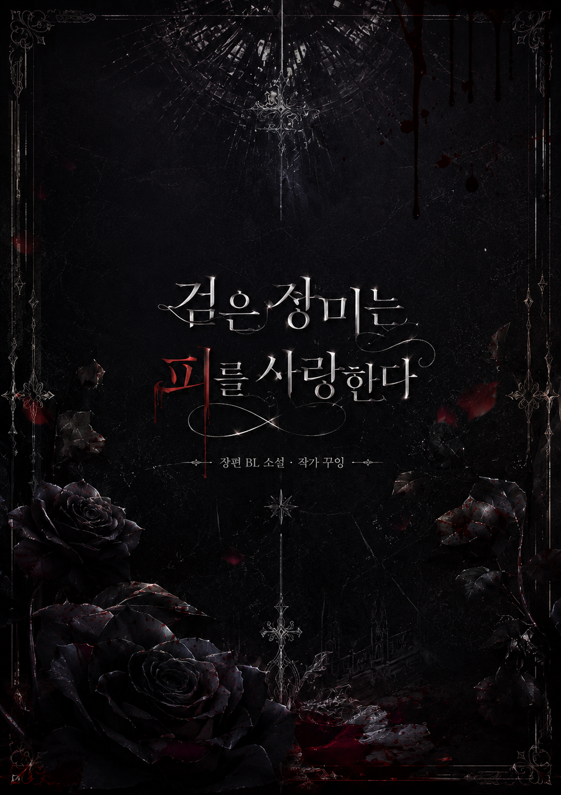

지음 · 꾸잉 | 매주 화·목 연재 | 연재중
DH그룹의 젊은 부회장 윤도겸. 감정도, 사람도 곁에 두지 않는 그가 유일하게 곁을 내어준 것은 신입 비서 한서준뿐이었다. 선을 지키려는 한서준과, 선을 지울 생각이 없는 윤도겸. 계약과 소유, 파혼과 권력 다툼 사이에서 두 사람은 서로를 구원하거나, 서로를 파괴하게 된다.
본편과 다른 선택, 다른 결말 — 독자들이 가장 많이 요청한 순간들을 다시 그린 외전입니다.